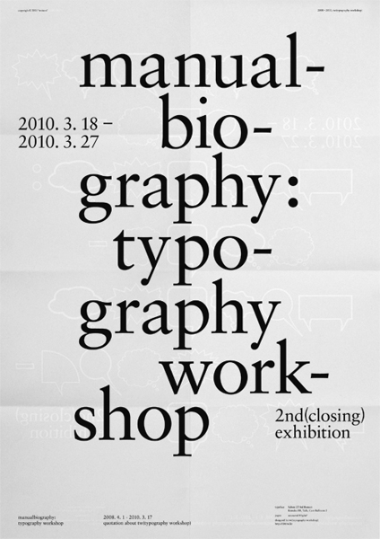
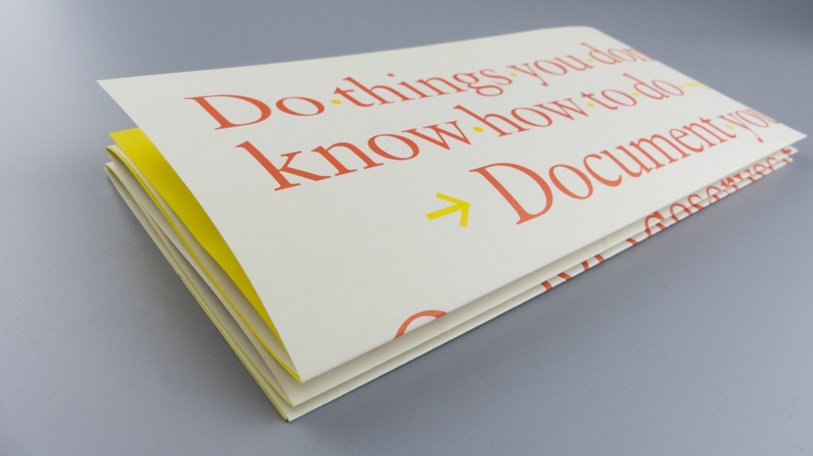
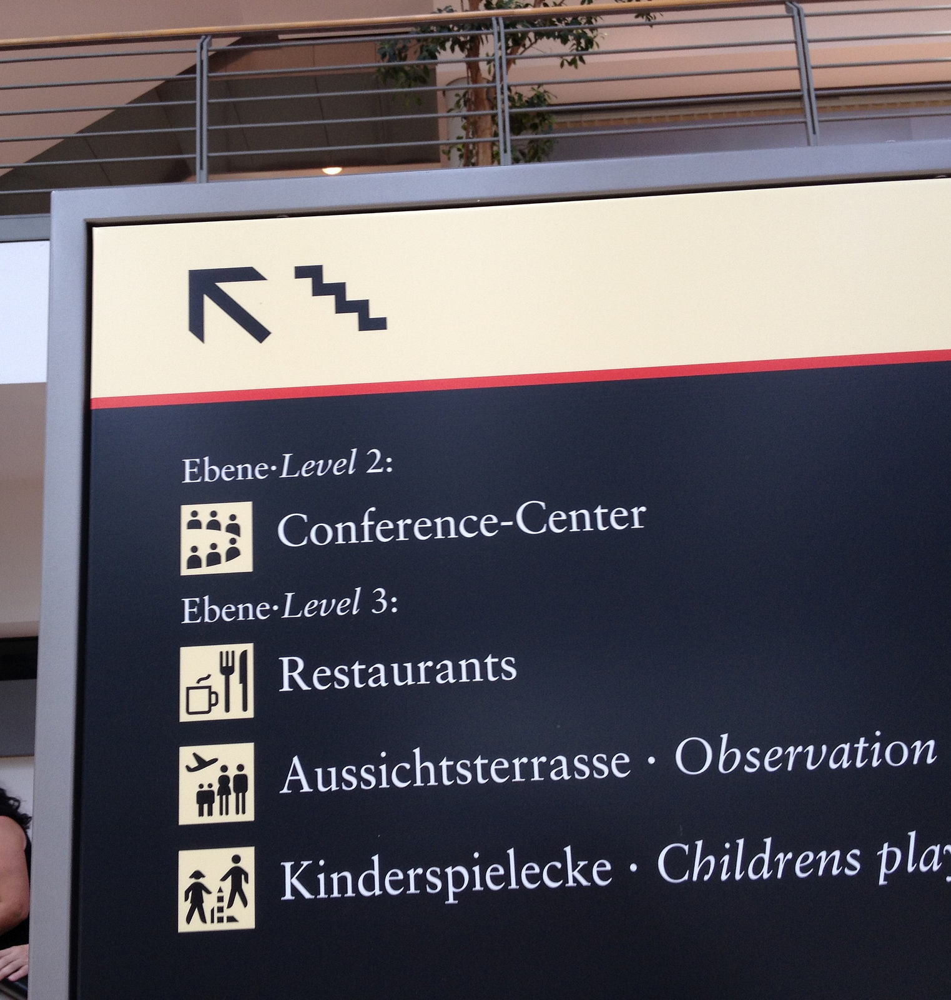
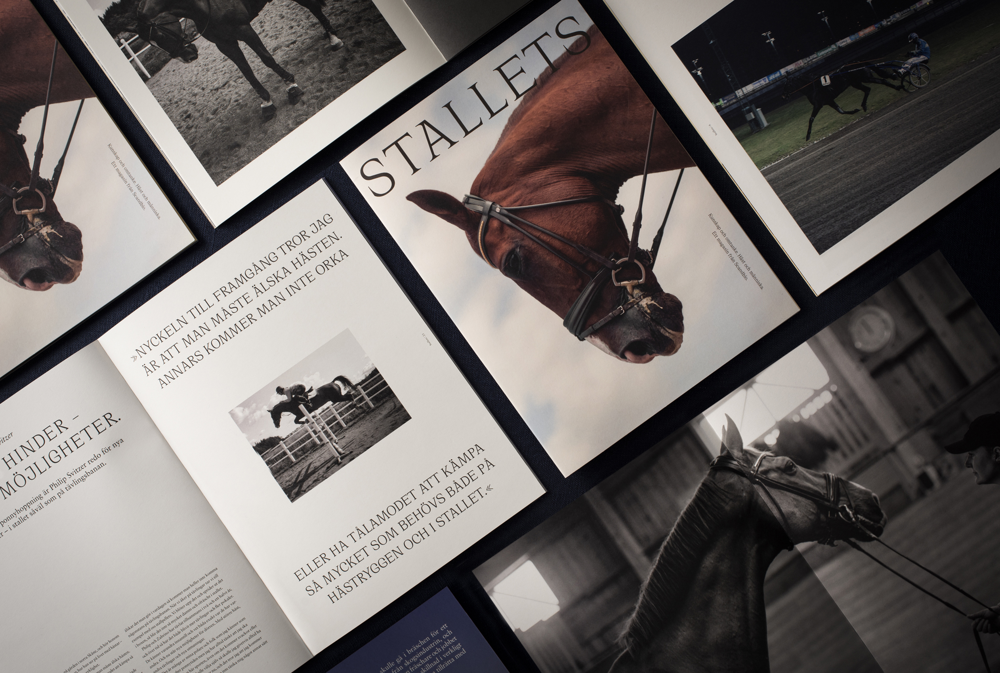
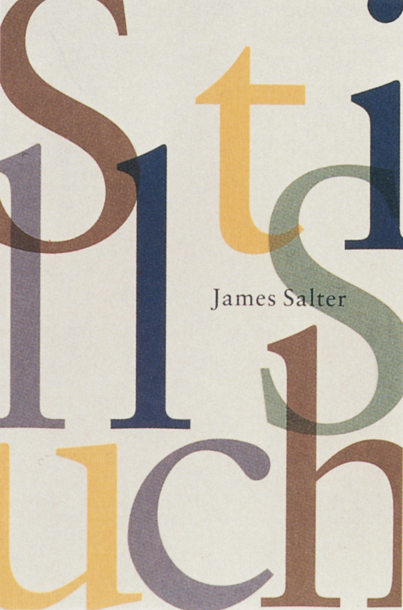
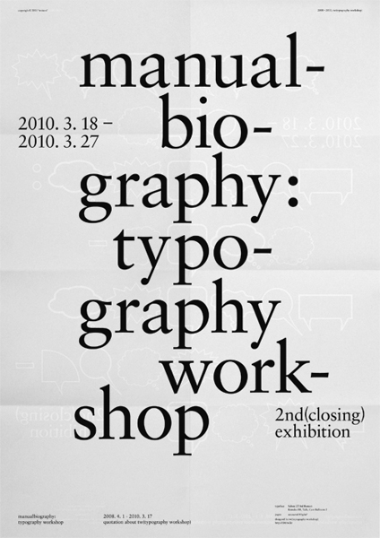
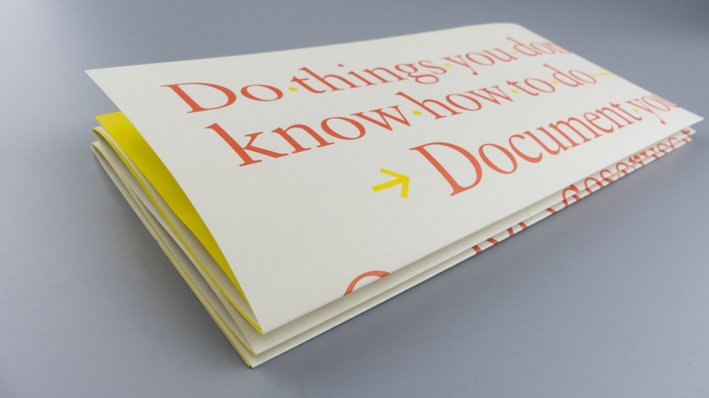
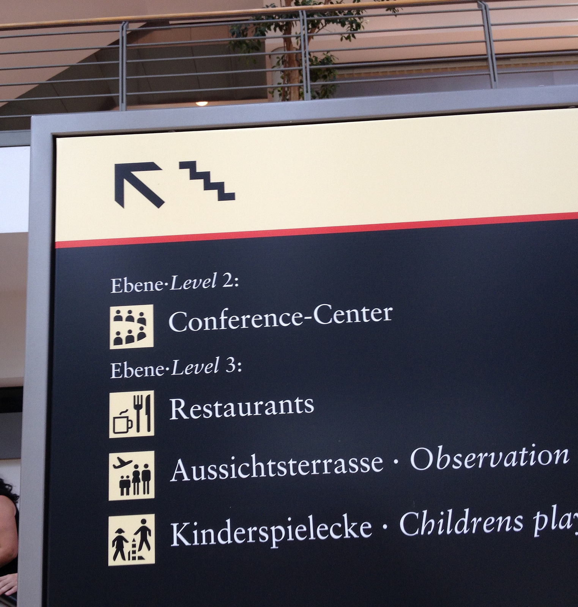
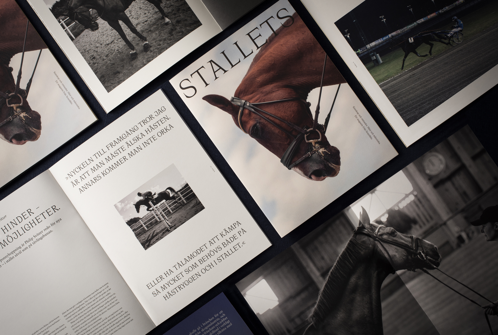
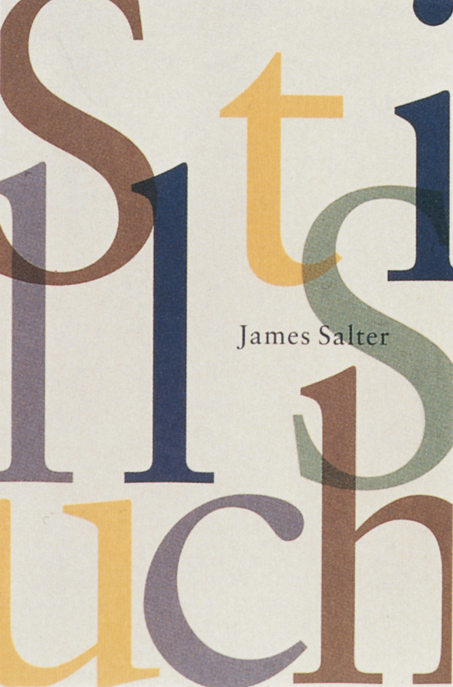

Sabon
Designer: Jan Tschichold inspired by the works of Claude Garamond
Year: 1967
Location: Germany
Purpose: Because it was a face with equal spacing in both the Roman and Italic versions, the Sabon design was initially created to create less of a workload when it came to typesetting, It was efficient because it behaved the same way across the three tangible forms of technology available at the time: single-type machine composition, and foundry type hand composition and linecasting.
Times New Roman
Designer: Stanley Morison (typographic advisor to Monotype) and Victor Lardent (Monotype designer)
Year: 1932 (first used in the Times newspaper) 1933 (available to the public)
Location: London
Purpose: Times New Roman was a custom typeface created for The Times of London newspaper when previous typefaces were deemed unsuitable by Morison and The Times executive staff. The criteria for the new typeface design was: it had to appear larger than its predecessor (unnamed), could take up no more space, should be slightly heavier, and highly legible. Times New Roman is based on the typeface, Plantin because Morison decided it would satisfy a lot of the criteria mentioned.
Similarities
- Serif fonts
- Horizontal cross bar
- Low-moderate contrast
- Similar descender heights
Differences
- Triangular serif (TNR), Linear Serif (Sabon)
- Oblique axis (TNR), Vertical axis (Sabon)
- Small aperture (TNR), Large aperture (Sabon)
- Rounded shoulders, bowls, links, necks, etc. (TNR), slanted shoulders, bowls, links, necks, etcc. (Sabon)
- Sabon has a higher ascender
- Sabon has wider characters
Sabon
 








